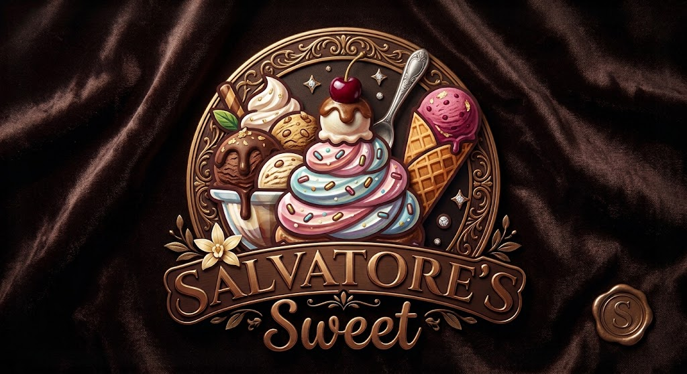

Bienvenidos a Salvatore's Sweet
Cada momento merece algo dulce.
Un rincón lleno de sabor, creatividad y pequeños detalles que convierten cualquier ocasión en algo especial.

Date un dulce gusto
Descubre nuestras categorías de inspiración. Cada detalle tiene su propio encanto.
No encontramos categorías con ese nombre. Prueba otra búsqueda.
Los detalles hacen la diferencia.
Hay momentos que merecen un toque extra de dulzura. Nos inspira la combinación de sabores, colores y presentaciones que sorprenden.
SaborUn mundo de posibilidades dulces.
CreatividadIdeas para cada ocasión especial.
PresentaciónEl encanto también entra por los ojos.
Un universo hecho para los amantes de lo dulce.
En Salvatore's Sweet, cada postre representa una oportunidad de compartir, celebrar y disfrutar. Nuestra imagen combina la elegancia del chocolate con la alegría de los sabores más coloridos.
Conecta con nosotros¿Listo para algo dulce?
Este es el espacio reservado para nuestros canales de contacto y novedades.
Información de contacto próximamente